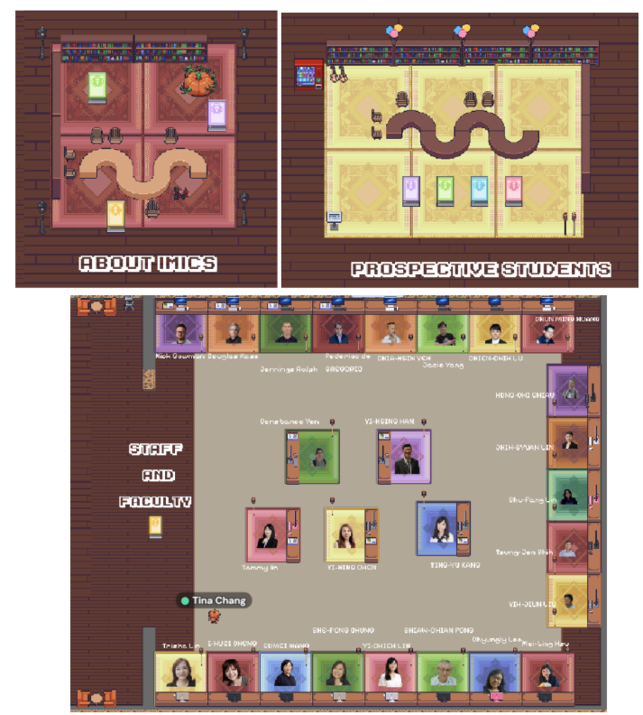
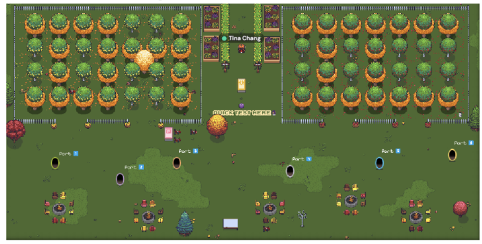
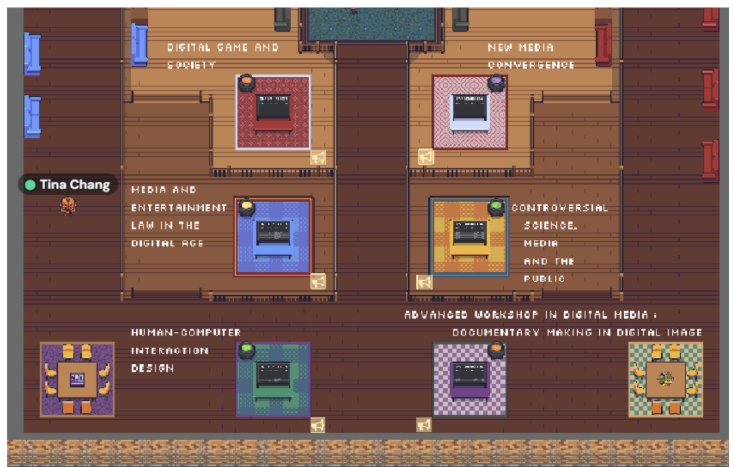
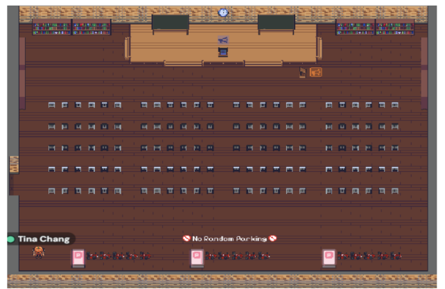

Gather Town《IMICS GATHER SPACE》
Gather Space Link：https://app.gather.town/app/7brLSdvzLao7GCGt/IMICS Gather Space




Home / Portfolio / Other Virtual Space Works

Gather Space Link：https://app.gather.town/app/7brLSdvzLao7GCGt/IMICS Gather Space



